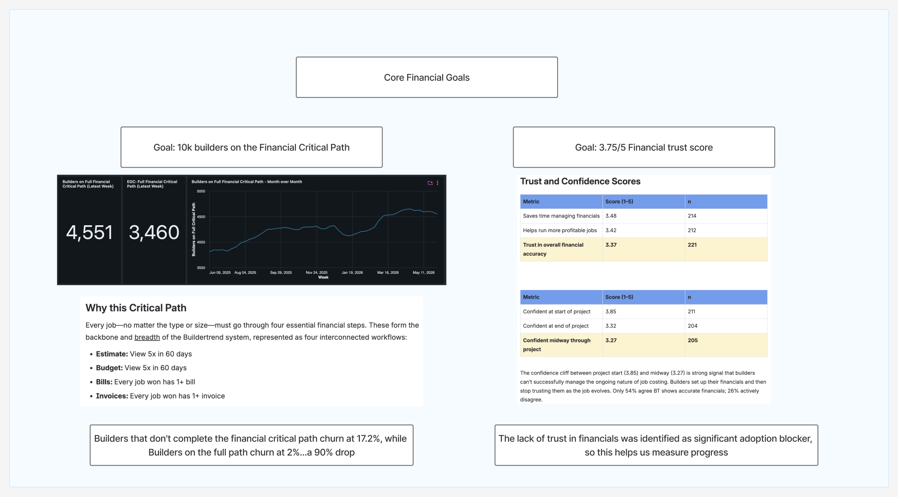
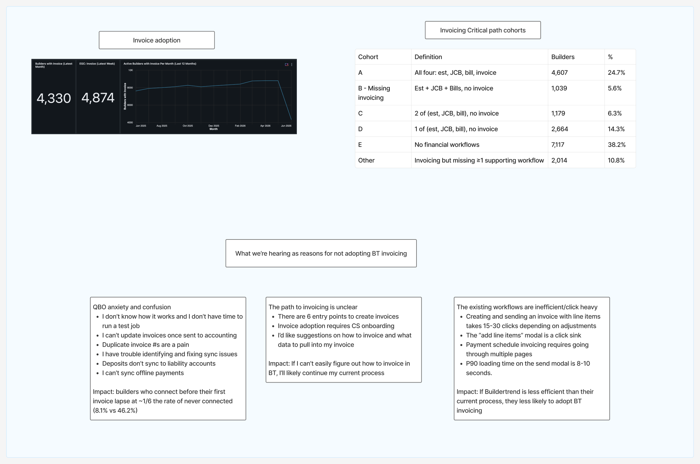
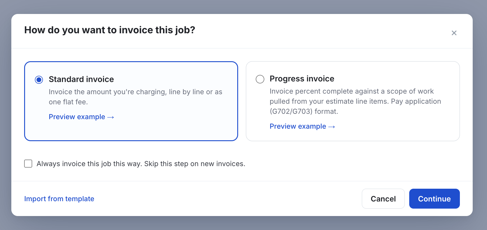
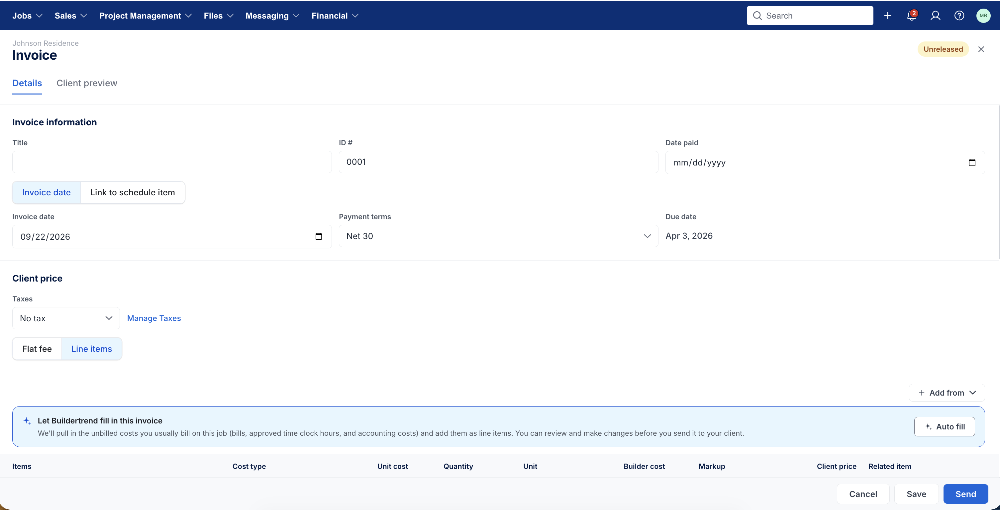
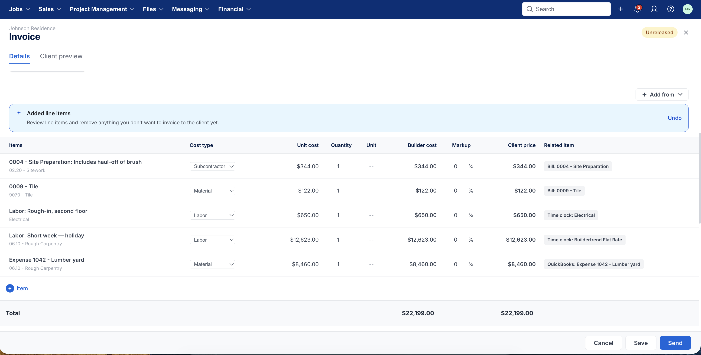

Path to Invoicing
A quarter spent re-winning builders who tried invoicing in Buildertrend and left. Not a feature gap story: the invoice itself mostly works. The path to it doesn't. This is the research behind that reframe, the design responses to it, and a live look at whether it's actually working.
Why this matters
Buildertrend's Q3 2026 goal: re-win 100 builders who had used invoicing before, then stopped, to create 2+ invoices again. Not net-new adoption. A return.
The stakes behind that goal are bigger than one quarter. Builders who complete the full financial workflow (estimate, budget, bills, and invoices) churn at 2%. Builders who don't complete it churn at 17.2%, a nearly 9x difference on the same population. Invoicing is the last step in that chain, so it's also the step most likely to be missing.

The org-level goal this quarter's work rolls up to: get more builders through the full financial critical path.
The working theory going in was the usual one: invoicing in Buildertrend is clunky and needs a smoother workflow. Leadership asked us to validate that before building against it, rather than assume it. So the quarter split into two tracks that turned out to reinforce each other: find out why builders actually leave, and in parallel, fix the two things we already suspected were true.

Where the quarter's two design tracks came from: a discovery board mapping why builders don't adopt BT invoicing, plus the cohort sizes behind it.
The board put real numbers on both suspicions. Creating and sending an invoice with line items takes 15 to 30 clicks depending on adjustments, and the send modal's slowest 10% of loads take 8 to 10 seconds. On the other side, builders have 6 different entry points to create an invoice, and most only find the right one with help from support. A third theme showed up alongside these two: QBO sync anxiety. Builders who connect their accounting before their first invoice lapse at roughly a sixth the rate of builders who never connect at all, 8.1% versus 46.2%. That's a real and separate problem, and it's out of scope for this case study.
What builders taught us
Our first round of discovery had been framed around "what's wrong with BT invoicing." For round two, we dropped that framing and asked nine builders to walk us through how they invoice today, start to finish, in whatever tool they actually use. The point was to see whether the real blocker was even in the invoicing UI at all.
The invoice doesn't look like what the client already signed
The single largest theme, six of nine builders. Clients physically put the estimate and the invoice side by side and reconcile them line by line. If the invoice regroups by cost code instead of the estimate's own hierarchy, it fails at the one job it has to do.
"What's the point of Primary Groups and Subgroups if you can't invoice with them? The client should see the same groups they approved on the estimate, not your cost-code breakdown." — Priya Gosar, Camber Construction
"I literally can put the two sheets of paper beside each other because the category literally lines up." — Andrew Maccormack, Leading Edge Group
A meaningful share had already been solved, they just didn't know it
Four of nine described a blocker Buildertrend already resolves. Priya's entire complaint disappeared in the call itself, once she saw AIA-style progress invoices group by estimate. She'd never found the feature. Andrew didn't know progress invoices, or the invoice format-and-preview settings, existed at all. This reframed "learning curve" from a difficulty problem into a discoverability problem: cheaper to test, cheaper to fix.
Builders come back after a support call, not a feature launch
We checked what actually separates the builders who came back from the ones who didn't. It wasn't onsite consulting: only two builders in the entire cohort ever had one, and neither was among the most recent wins. It was inbound support calls. Builders who called support about invoicing came back at more than double the rate of those who didn't, and the group with the fastest recent wins had called in more than twice, averaging 22.7 minutes on the phone. The pattern in the transcripts is the same almost every time: someone new to the account calls asking how to invoice, gets walked through it and through linking cost codes to QuickBooks, then sends their first invoice two to four weeks later. A human explaining the path is doing the job we want the product to do on its own. That's direct evidence for the unclear-path problem, not just a hypothesis: the people who get clarity, from a person instead of the UI, come back.
Releasing an invoice isn't optional. It's what keeps a builder on the platform
Builders who create an invoice but never release it to the client don't just fail to see value. They leave. Of builders who created invoices but never released any of them, 75% lapsed entirely. Builders whose clients can't even open the invoice, because no email is on file or nothing is shared, lapse at 13% versus 1% for builders who share normally. Getting an invoice out the door isn't a nice-to-have step in the funnel. It's the step that keeps the builder using Buildertrend at all.
The abandonment number everyone quoted was wrong
A commonly-cited stat said 26% of invoices never get released, read as builders giving up partway through. We went back to the funnel with a full year of runway to release (so "abandoned" actually means abandoned) and found the real number is 5.5%. The gap is almost entirely draw-schedule placeholders: builders bulk-create a run of future invoices ("Draw 1," "Draw 2," "Deposit," "Final Payment") when a job starts, and roughly half are never meant to be released yet, because the milestone hasn't happened or the schedule was aspirational when it was built. Batch invoices created at $0 confirm it: of 14,478, only 44 ever released. That's scaffolding, not abandonment, and conflating the two overstates a problem that mostly isn't there.
The real abandonment that remains concentrates in one place: 72% of jobs with an abandoned invoice never released a single invoice on that job at all. It's not "tried, gave up partway through," it's a job that isn't ready to bill yet.
Releasing isn't the finish line either
Even invoices that do get released often never reach the client through Buildertrend's own send flow, but breaking that number apart shows it's three different builder behaviors, not one dead end. A third of released invoices get paid via a manually recorded payment, the builder bills the client entirely outside Buildertrend (paper, text, in person) and only touches the platform afterward to log that money arrived. A quarter sync straight to QuickBooks or Xero, a deliberate division of labor where Buildertrend builds the invoice against job costs and the accounting platform does the actual send and collection. Less than half a percent are genuinely stuck with no further action at all. So "released but not sent" reads like a workflow failure, but for most of that group it's evidence Buildertrend's send feature is competing with a channel the builder already trusts, not filling an empty gap. That channel competition is the accounting-sync problem flagged earlier in this case study as real, and out of scope.
The setup gap that predicts everything else
Cutting the Q3 cohort by what a builder had already set up going in: 55% had a reusable invoicing setup (a payment schedule, an invoice template, or both) before their first invoice this quarter, split 39% template-only, 9% payment-schedule-only, 7% both. The builders without either kind of head start were the ones starting from a blank page every time, which is exactly the "too many steps" complaint, just measured instead of described.
What builders had set up before their first invoice this quarter
Both a template and a schedule: 7%, the smallest slice, and the group most of this quarter's design work is trying to grow.
How we designed for it
Two problems, addressed as two separate design tracks inside the same reimagined invoicing prototype: the path to invoicing is unclear, and once you're on it, it takes too many steps.
Unclear path: guiding the click, not just labeling it
The old "+ Invoice" button assumed the builder already knew which of several documents they wanted. We rebuilt it as a guided decision: clicking + Invoice asks how the job is actually invoiced, then lets the document type follow from that answer instead of asking the builder to name the document up front. The job can save that answer as its default, so the question doesn't repeat on a job that only ever bills one way.
Six ways in, collapsed into one guided question
Six real entry points builders described, redrawn as one guided decision. Cadence first, document type follows.

The shipped guided picker: cadence first, with a way to skip the question entirely on jobs that only ever bill one way.
Payment schedules got the same treatment from a different angle. They used to be locked to job setup, before the first invoice existed, which meant a builder who started without one had no path back to it. We moved payment schedule creation onto its own always-available entry point on the Invoices page, so a builder mid-job, already sending bills to budget, can still adopt a schedule instead of hand-building draws one at a time. That fix is in progress on the shipped product now, not just the prototype.
The usage data backs up why this matters. Builders on both contract types already hand-roll batches of 3 or more draw invoices per job today, titled "Draw 1," "Draw 2," "Deposit," "Final Payment," the exact behavior a payment schedule is meant to replace. Checked against the field that actually ties an invoice to the dedicated Payment Schedule feature: 71.1% of these batches have no link to it at all. Builders are clicking "+ Invoice" repeatedly to build the same draw sequence instead of using the feature built for it, and both approaches release at about the same rate. That's a clear signal the underlying need is real, and that the existing feature wasn't reaching most of the behavior it was built for.
Too many steps: one action instead of several
Creating a payment schedule used to be Save, then a separate Create action to actually generate the draws. That asked the builder to distinguish "keep this schedule" from "use this schedule," a distinction with no real value to them. It's now one action: saving a schedule generates the full set of draft invoices for it in the same step, and the modal says so before the button is pressed.
One less decision between setup and a job's worth of draws
Saving a schedule now generates the full set of draft invoices in the same step, and the modal says so before the button is pressed.
The open-book slice: Invoice Autofill
Open-book invoicing has its own version of "too many steps": builders manually re-select bills and time-clock entries that Buildertrend already has sitting uninvoiced on the job. We sized the problem first. Across open-book jobs, only 27.4% of bill line items ever reach a client invoice.
Before building anything, we traced a full year of invoices builders actually sent back to where each line came from, to answer one question: what do builders themselves treat as billable? The answer split cleanly by contract type. Open-book invoices are 65.3% costs (bills, time, other job costs) and only 9.7% contract. Fixed-price invoices are the mirror image: 67.5% contract and only 8.1% costs. On a fixed-price job, a cost-based suggestion would be wrong roughly 97% of the time, since those builders bill the contract and track costs internally for margin. That's the evidence behind keeping autofill open-book only rather than building one suggestion for every job.
The same data ruled out two rules that seemed obviously correct going in. We didn't wait for a bill to be marked paid: only 1 in 5 paid bills were actually paid before the invoice went out, since the normal order is bill the owner first, pay the sub after. A "paid only" filter would have quietly held back roughly a quarter-million billable lines a year. We also didn't add a recency cutoff. Costs older than six months get invoiced slightly more often than recent ones (86% vs. 81%), so a "recent costs only" rule would have dropped real revenue instead of protecting against stale data.
What decides which costs autofill pre-checks is the builder's own history: a cost code they've billed on that job before gets billed again 88% of the time, one they've never touched, 0.8%. History only sets what starts checked. Every eligible cost still shows up, at roughly 82% precision, catching about two-thirds of what a builder would have billed anyway. A wrong guess costs one click to undo; a hidden line is revenue the builder never sees. That asymmetry is why we sliced the fix this thin: a banner that offers to fill a draft invoice from a job's uninvoiced costs, with nothing about the underlying workflow reshaped. The analysis also caught a live bug along the way: 3,381 jobs today tell the builder they have costs to invoice, then show an empty list when they look, because two parts of the existing code disagree on which bills count.
There's a churn number that makes this more than a convenience fix. Splitting builders by how their line items get onto the invoice, sourced from a bill or estimate, hand-typed with nothing behind it, or flat fee, the group that types every line by hand churns at 19.24%, the worst of any segment measured, against roughly 15.6% for the other two. Flat fee, the shortcut we'd have guessed was the risky one, churns identically to sourced line items. The builders actually at risk aren't taking a shortcut. They're in the line-item view doing the work Autofill is meant to remove.

The banner itself: an offer, not a takeover. The builder still reviews and sends.

After Auto fill runs: every line still traces back to its source (a bill, a time clock entry, a QuickBooks expense), and Undo is one click away.
We recruited and data-qualified a pilot roster from builders already sitting in the 74–90% coverage band, builders close enough to full coverage that autofill has real remaining work to do, not so close that there's nothing left for it to catch.
Prototype
The prototype below opens on the guided "+ Invoice" flow. Pick a cadence to see the document follow it, or open a job's Invoices grid and try Auto fill on an open-book job to see it pull in unbilled costs.
Open prototype in new tab: bt-invoice.vercel.app/?page=owner-invoices ↗
How we're validating it
This is an outcome metric, tracked live against the actual quarter goal, not a research-only pitch. The chart below is rebuilt from Databricks each time this page updates, not a screenshot, so the numbers stay honest as the quarter moves.
Conversion funnel, lapsed cohort (n = 744)
Databricks dashboard "SoT Q3 Goal Tracker," frozen cohort q3_invoicing_cohort_frozen, pulled live.
Builders crossing the 2-invoice line, by week
Weekly totals from the daily-progress query, smoothed for legibility. A steady trickle, not a single launch spike, which tracks the release cadence of the underlying design work.
Success rate by project category
| Segment | Category | Cohort | Reached 2+ | Rate |
|---|---|---|---|---|
| Never-invoiced | Remodeler | 72 | 19 | 26.4% |
| Never-invoiced | Residential | 300 | 49 | 16.3% |
| Lapsed | Residential | 406 | 42 | 10.3% |
| Lapsed | Commercial GC | 112 | 11 | 9.8% |
| Lapsed | Remodeler | 132 | 12 | 9.1% |
| Lapsed | Specialty/Trade | 71 | 2 | 2.8% |
Specialty/trade builders are converting at roughly a third the rate of remodelers on the same cohort. Worth its own follow-up before assuming one fix reaches every segment equally.
What this metric can and can't say: it tracks the whole re-win effort, not any single design change on its own. The payment-schedule and autofill work are still rolling out through the quarter, so we can point to a builder seeing fewer steps and later hitting 2+ invoices, but we can't yet prove one caused the other. Treat this number as the outcome the whole initiative is accountable to, not as proof any single fix here is the reason it's moving.
What we're exploring, and why
Invoice Autofill, past the pilot roster
The feature is built and the pilot recruits are data-qualified, but the flag is still dev-only, on for zero production builders as of this writing. The next step is mechanical, not design: move it to a real pilot rollout and watch whether coverage on those jobs actually climbs past 90%.
Specialty and trade builders
The segment table above is the newest finding in this study, and it's a question, not an answer yet. Every other category is converting at 9% or better; specialty and trade sits at 2.8%. Worth a dedicated interview round before assuming the same unclear-path, too-many-steps framing applies evenly across contractor types.
Inconsistent invoicing, not volume, predicts churn
Builders who send every invoice through Buildertrend looked, at first, like the highest churn-risk group, until we controlled for the fact that they also send far fewer invoices overall. Once volume is held constant, the real pattern flips: builders who commit to one channel, fully on Buildertrend, fully on QuickBooks or Xero, or fully manual, churn less than builders whose behavior is split. And the split usually happens within a single job: 44.6% of multi-invoice jobs mix sent and unsent invoices, the same builder making a per-invoice judgment call rather than losing steam over time. Worth testing as an early warning signal, a builder whose invoicing behavior on a job suddenly gets inconsistent may be a better churn flag than how many invoices they've sent.
Presentation fidelity, the round's headline finding
Six of the nine builders we talked to came back to the same root cause: the invoice doesn't preserve the estimate's own grouping, so the client can't reconcile the two documents. That's a larger, structural piece of work than this quarter's slice. It's now its own draft case study, Invoice Presentation, tracking the Q4 recommendation to fix it.